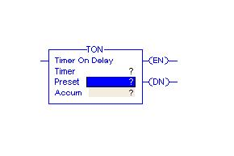

Aim
To develop an application using On-Delay timer.
Objective:-
- 1. Study the timing diagram of On Delay Timer
2. Solve the assignment of Ton timer

Q1.
Input modules provide an interface between
Field equipment and the CPU
Input modules and the CPU
output modules and the field devices
Q2.
In which of the following processes a real time operation is involved
Level control of a tank
Starting of motor using DOL starter
Traffic signal
Q3.
The sequence of steps repeated by the processor to perform the duties of the PLC is called
Scanning
Updating
Polling
Q4.
Which of the following is a PLC programming standard
ANSI/ISA S-88
IEC 61107
IEC 61131-3
Q5.
The programming functions available in PLC are determined by
Programming device
Input module
CPU

PLC timers instruction is used to activate or deactivate a device after a preset interval of time.
Types of Timers available are:On-Delay timer (TON)
Off-Delay timer (TOF)
Retentive timer on (RTO)
On-Delay Timer (TON)
It is used when an action is to begin a specified time after the input becomes true.
Consider an example wherein a certain step in the manufacturing process is to begin 30 seconds after a signal is received from a limit switch. The 30 seconds delay is the ON-delay timer’s preset value.
The figure below shows a symbolic representation of the timer.
The instruction mainly includes three status bits namely EN, TT, DN. Their significance is as follows:
Enable (EN) Bit: - The enable bit indicates the TON instruction is enabled.
Timer-Timing (TT) Bit: - The timing bit indicates that a timing operation is in process.
Done (DN) Bit: - The done bit changes state whenever the accumulated value reaches the preset value.
Accumulator (ACC) Bit: - The accumulated value specifies the number of milliseconds that have elapsed since the TON instruction was enabled.
Preset (PRE) Bit: - The preset value specifies the value (1msec units) which the accumulated value must reach before the instruction sets the .DN bit.
The figure shows the timing diagram which illustrates the functioning of all the bits in sequence.

The following example, after running, will illustrate the function of each bit.

Before toggling the Start, all the lamps namely Lamp_1, Lamp_2 and Lamp_3 are OFF.
After the Start is toggled, Lamp_1 and Lamp_2 are ON. This implies the Timer_1 is enabled and its timer timing bit is activated. After the delay i.e. preset value of the timer, Lamp_1 and Lamp_3 are ON and Lamp_2 will be OFF.
The Function Block Diagram, Timing diagrams, and ladder diagram solutions are as per the available PLC(Rockwell Automation) in College of Engineering Pune.
It will be better understood after the given example is developed on the simulator.

In this experiment the on delay timer will be tested for its functionalities using Simulator. Following bits of the timer are to be observed.
Initialising bit “q” in this case.Enable bit “EN”
Done bit “DN”
Timer timing bit “TT”
Preset value needs to be entered by the user.
While configuring the timer the time base needs to be selected. There are two options viz. 1 mS and 10 mS are available for you to configure. Select appropriate as per the need of the application. The screen shot of the configured timer will appear like this.
To test the EN, DN, and TT bits; double click on the bit and give tag name to the bit. The same tag name is to be used in the new rung to test the status or to energies the output. You can also test the cascading of the timer using these bits.
For details see following screen shots.
Observe the tag name for timer DN bit i Edit Mode and how it is used in the logic.
Observe the bit status in Run mode when input a is toggled.
See following screen shot to observe the output bit status when delay is over.


Q1.
Ton stands for
Off delay timer
Retentive timer
On delay timer
Q2.
Ton timer is used when action is expected to be delayed
True
False
Not always true
Q3.
Which of the following bit is used to start the timer operation
TT
EN
DN
Q4.
If the preset value is 2000, for a 1ms time base timer, the delay provided is
2 sec
20 sec
200 ms
Q5.
Which bit of timer ensures that the timing process is going on
DN
TT
EN

- 1. List the applications of the ON delay timer.
2.With timing diagram explain the working of on delay timer.
3. What do you mean by timebase of the timer?
4. "A firecracker an example of ON delay timer", Justify.
5."On delay timer cannot be used in case of DG set for hour counting application", Justify.

- Gary Dunning, “Introduction Programmable Logic Controllers”, CENGAGE Learning, 3rd Ed., 2006.
- John R. Hackworth, Frederick D. Hackworth Jr., “Programmable Logic Controllers ”, Pearson, 2004.
- W.Bolton, “Programmable Logic Controllers”, Elsevier, 4th Ed., 2006.
- http://plcbasics.net/
- http://www.plcmanual.com/
- http://literature.rockwellautomation.com/
- http://www.automation.siemens.com/